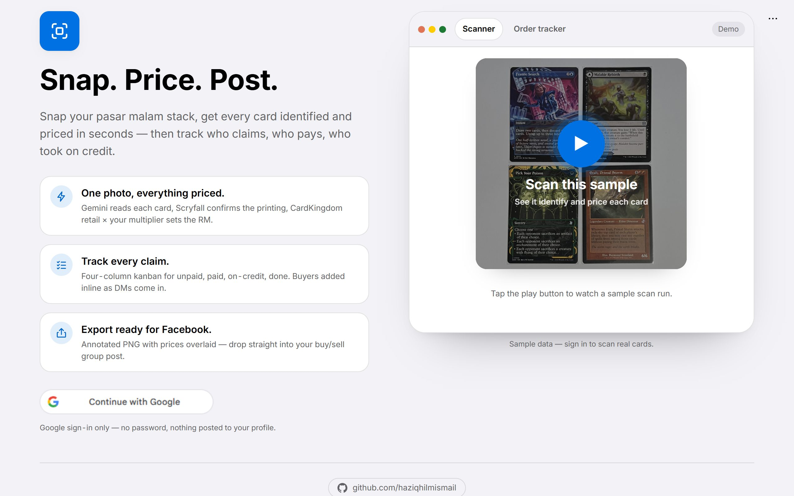
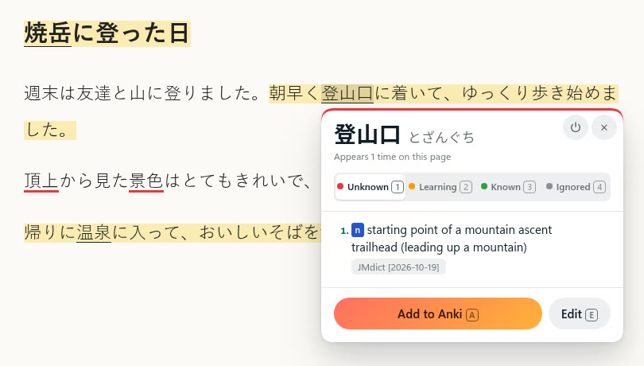
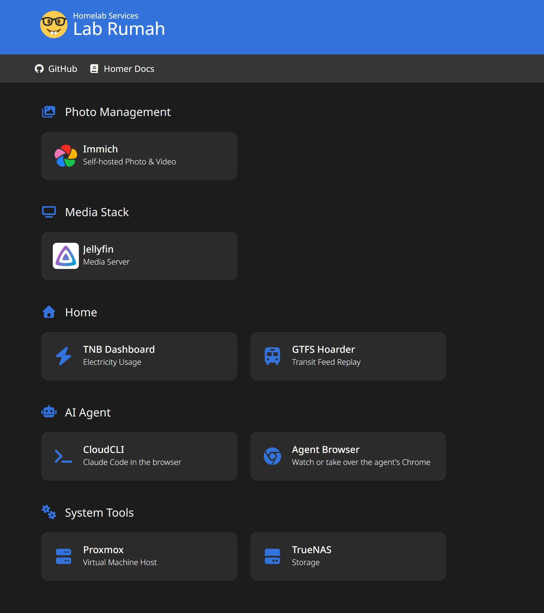

Web app, live at mtg.haziqhilmi.com

Take one photo of a pile of Magic cards, and it names and prices each card. I use it when I sell cards at night markets. Gemini, Scryfall, Card Kingdom, FastAPI, React.
Open-source Chrome extension for learning Japanese

Underlines each Japanese word on a page or in YouTube and Netflix subtitles by how well I know it. I press A on a new word, and it goes to Anki with the sentence, a screenshot, and the audio of that line. For a video with no Japanese subtitles, a WhisperX add-on writes them on my PC. One click in the extension starts it. TypeScript, Chrome extension, kuromoji, WhisperX, Playwright.
Home Server
Built for RM1,500 from second-hand parts

Proxmox with TrueNAS and 24 Docker containers. Immich and Jellyfin keep 3.2 TB of my family's photos and media. Tailscale for remote access.
RuneLite plugin for Old School RuneScape
When my inventory fills up while I AFK mine, the game jumps to the front. I click a rock, and a second later it minimizes itself and I am back in my other window. Java, RuneLite.